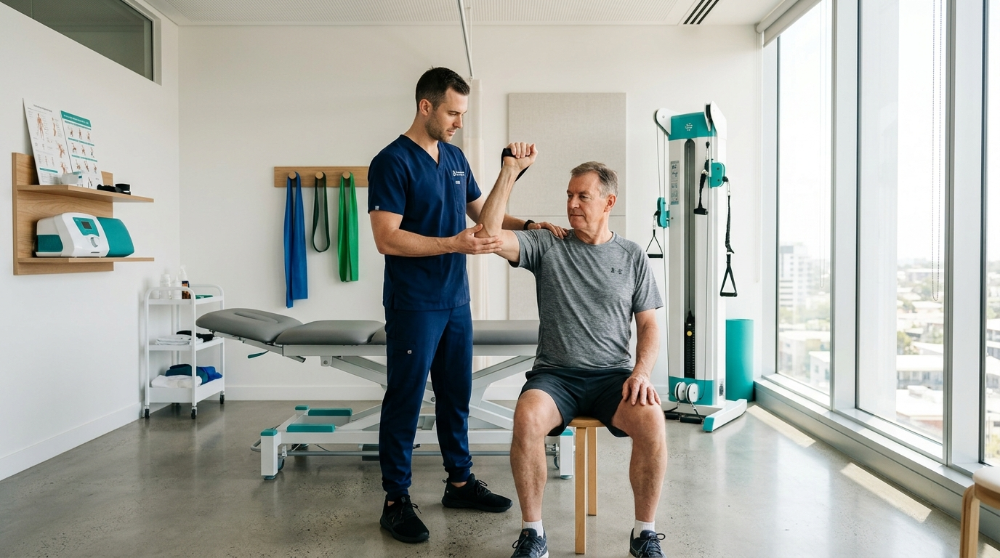

When you sit for eight or nine hours a day, the intradiscal pressure in your lumbar spine increases by up to 90% compared to standing. Combined with the forward head posture commonly known as "tech neck," your spinal ligaments and facet joints bear sustained mechanical tension that eventually triggers chronic inflammation, muscle spasms, and disc bulges.
Fortunately, reversing this strain does not require dramatic lifestyle upheaval. Integrating minor, science-backed ergonomic changes into your workday yields compounding relief. Here are the 7 habits recommended daily by our physiotherapy team at Aarav Clinics.
1. Align Your Eye Level with the Top Third of Your Screen
When you look down at a laptop placed flat on your desk, your neck flexes forward by roughly 45 degrees. At that angle, the effective weight of your head on your cervical spine skyrockets from its resting 5 kg to nearly 22 kg.
The Fix: Use an inexpensive laptop riser or stack books so the top third of your display aligns directly with your horizontal eye gaze. Always pair this with an external keyboard and mouse so your forearms rest parallel to the desk.
2. Practice the "20-20-20 Spinal Break"
Static posture is the true enemy of intervertebral discs. Discs lack direct blood vessels; they rely on movement to pump fluid and nutrients in and out through osmosis.
Every 30 to 45 minutes, stand up, take 20 steps, and perform 3 gentle standing lumbar extensions (placing your palms on your lower back and gently arching backward). This momentary extension counterbalances the hours spent in spinal flexion.
"The best posture is your NEXT posture. Even the most ergonomic chair in the world will cause discomfort if you stay locked in it for four consecutive hours without movement."
3. Keep Your Knees at 90 Degrees with Flat Feet
Dangling feet or tucking your ankles under your chair tilts your pelvis anteriorly or posteriorly, transferring immense mechanical stress directly to the L4-L5 and L5-S1 lumbar discs.
Adjust your chair height until your thighs are parallel to the floor and your feet rest flat. If your feet don't reach the ground comfortably after raising your seat to match your desk height, use an angled footrest.
4. Use Lumbar Support to Preserve Your Natural Lordosis
The lower spine naturally curves inward (lordotic curve). Slouching flattens this curve, stretching the posterior spinal ligaments and squeezing the disc nucleus pulposus backward toward the spinal nerves.
Ensure your chair features adjustable lumbar firmness that presses gently into the small of your back. Alternatively, place a rolled towel horizontally across your lower back at belt level.
5. The Chin Tuck: Re-educating Deep Neck Flexors
Forward head posture causes the suboccipital muscles at the base of the skull to lock into chronic spasm, frequently producing tension headaches behind the eyes.
Three times a day, sit tall, look straight ahead, and gently glide your chin backward as if making a subtle double chin. Hold for 5 seconds and repeat 10 times. This strengthens the deep cervical flexor muscles that support your neck.
6. Hydrate Consciously Throughout the Day
Intervertebral discs are composed primarily of water. During the day, gravity and seated pressure gradually express fluid from the discs (which is why humans are slightly shorter in the evening than upon waking). Adequate systemic hydration supports natural disc rehydration cycles.
7. Schedule a Periodic Biomechanical Assessment
If neck tightness, burning between the shoulder blades, or numbness tingling down the leg has persisted for more than two weeks, passive stretching alone may not resolve it. A clinical assessment by a physiotherapist identifies specific joint restrictions, pelvic imbalances, and muscle firing deficits before they escalate into disc herniations.
Quick Action Checklist
- Elevate monitor to eye level with laptop stand + separate keyboard.
- Perform 3 standing backward extensions every hour.
- Keep feet planted flat and knees bent at 90 degrees.
- Do 10 chin tucks at lunch to reset cervical posture.